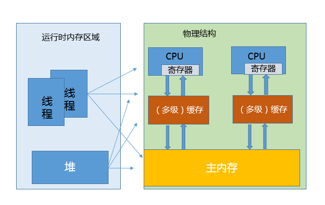

- 00 开篇词 以面试题为切入点，有效提升你的Java内功-极客时间.md.html
- 01 谈谈你对Java平台的理解？.md.html
- 02 Exception和Error有什么区别？-极客时间.md.html
- 03 谈谈final、finally、 finalize有什么不同？-极客时间.md.html
- 04 强引用、软引用、弱引用、幻象引用有什么区别？-极客时间.md.html
- 05 String、StringBuffer、StringBuilder有什么区别？-极客时间.md.html
- 06 动态代理是基于什么原理？-极客时间.md.html
- 07 int和Integer有什么区别？-极客时间.md.html
- 08 对比Vector、ArrayList、LinkedList有何区别？-极客时间.md.html
- 09 对比Hashtable、HashMap、TreeMap有什么不同？-极客时间.md.html
- 10 如何保证集合是线程安全的 ConcurrentHashMap如何实现高效地线程安全？-极客时间.md.html
- 11 Java提供了哪些IO方式？ NIO如何实现多路复用？-极客时间.md.html
- 12 Java有几种文件拷贝方式？哪一种最高效？-极客时间.md.html
- 13 谈谈接口和抽象类有什么区别？-极客时间.md.html
- 14 谈谈你知道的设计模式？-极客时间.md.html
- 15 synchronized和ReentrantLock有什么区别呢？-极客时间.md.html
- 16 synchronized底层如何实现？什么是锁的升级、降级？-极客时间.md.html
- 17 一个线程两次调用start()方法会出现什么情况？-极客时间.md.html
- 18 什么情况下Java程序会产生死锁？如何定位、修复？-极客时间.md.html
- 19 Java并发包提供了哪些并发工具类？-极客时间.md.html
- 20 并发包中的ConcurrentLinkedQueue和LinkedBlockingQueue有什么区别？-极客时间.md.html
- 21 Java并发类库提供的线程池有哪几种？ 分别有什么特点？-极客时间.md.html
- 22 AtomicInteger底层实现原理是什么？如何在自己的产品代码中应用CAS操作？-极客时间.md.html
- 23 请介绍类加载过程，什么是双亲委派模型？-极客时间.md.html
- 24 有哪些方法可以在运行时动态生成一个Java类？-极客时间.md.html
- 25 谈谈JVM内存区域的划分，哪些区域可能发生OutOfMemoryError-极客时间.md.html
- 26 如何监控和诊断JVM堆内和堆外内存使用？-极客时间.md.html
- 27 Java常见的垃圾收集器有哪些？-极客时间.md.html
- 28 谈谈你的GC调优思路-极客时间.md.html
- 29 Java内存模型中的happen-before是什么？-极客时间.md.html
- 30 Java程序运行在Docker等容器环境有哪些新问题？-极客时间.md.html
- 31 你了解Java应用开发中的注入攻击吗？-极客时间.md.html
- 32 如何写出安全的Java代码？-极客时间.md.html
- 33 后台服务出现明显“变慢”，谈谈你的诊断思路？-极客时间.md.html
- 34 有人说“Lambda能让Java程序慢30倍”，你怎么看？-极客时间.md.html
- 35 JVM优化Java代码时都做了什么？-极客时间.md.html
- 36 谈谈MySQL支持的事务隔离级别，以及悲观锁和乐观锁的原理和应用场景？-极客时间.md.html
- 37 谈谈Spring Bean的生命周期和作用域？-极客时间.md.html
- 38 对比Java标准NIO类库，你知道Netty是如何实现更高性能的吗？-极客时间.md.html
- 39 谈谈常用的分布式ID的设计方案？Snowflake是否受冬令时切换影响？-极客时间.md.html
- 周末福利 一份Java工程师必读书单-极客时间.md.html
- 周末福利 谈谈我对Java学习和面试的看法-极客时间.md.html
- 结束语 技术没有终点-极客时间.md.html
- 捐赠
29 Java内存模型中的happen-before是什么？-极客时间
Java 语言在设计之初就引入了线程的概念，以充分利用现代处理器的计算能力，这既带来了强大、灵活的多线程机制，也带来了线程安全等令人混淆的问题，而 Java 内存模型（Java Memory Model，JMM）为我们提供了一个在纷乱之中达成一致的指导准则。
今天我要问你的问题是，Java 内存模型中的 happen-before 是什么？
典型回答
Happen-before 关系，是 Java 内存模型中保证多线程操作可见性的机制，也是对早期语言规范中含糊的可见性概念的一个精确定义。
它的具体表现形式，包括但远不止是我们直觉中的 synchronized、volatile、lock 操作顺序等方面，例如：
- 线程内执行的每个操作，都保证 happen-before 后面的操作，这就保证了基本的程序顺序规则，这是开发者在书写程序时的基本约定。
- 对于 volatile 变量，对它的写操作，保证 happen-before 在随后对该变量的读取操作。
- 对于一个锁的解锁操作，保证 happen-before 加锁操作。
- 对象构建完成，保证 happen-before 于 finalizer 的开始动作。
- 甚至是类似线程内部操作的完成，保证 happen-before 其他 Thread.join() 的线程等。
这些 happen-before 关系是存在着传递性的，如果满足 a happen-before b 和 b happen-before c，那么 a happen-before c 也成立。
前面我一直用 happen-before，而不是简单说前后，是因为它不仅仅是对执行时间的保证，也包括对内存读、写操作顺序的保证。仅仅是时钟顺序上的先后，并不能保证线程交互的可见性。
考点分析
今天的问题是一个常见的考察 Java 内存模型基本概念的问题，我前面给出的回答尽量选择了和日常开发相关的规则。
JMM 是面试的热点，可以看作是深入理解 Java 并发编程、编译器和 JVM 内部机制的必要条件，但这同时也是个容易让初学者无所适从的主题。对于学习 JMM，我有一些个人建议：
- 明确目的，克制住技术的诱惑。除非你是编译器或者 JVM 工程师，否则我建议不要一头扎进各种 CPU 体系结构，纠结于不同的缓存、流水线、执行单元等。这些东西虽然很酷，但其复杂性是超乎想象的，很可能会无谓增加学习难度，也未必有实践价值。
- 克制住对“秘籍”的诱惑。有些时候，某些编程方式看起来能起到特定效果，但分不清是实现差异导致的“表现”，还是“规范”要求的行为，就不要依赖于这种“表现”去编程，尽量遵循语言规范进行，这样我们的应用行为才能更加可靠、可预计。
在这一讲中，兼顾面试和编程实践，我会结合例子梳理下面两点：
- 为什么需要 JMM，它试图解决什么问题？
- JMM 是如何解决可见性等各种问题的？类似 volatile，体现在具体用例中有什么效果？
注意，专栏中 Java 内存模型就是特指 JSR-133 中重新定义的 JMM 规范。在特定的上下文里，也许会与 JVM（Java）内存结构等混淆，并不存在绝对的对错，但一定要清楚面试官的本意，有的面试官也会特意考察是否清楚这两种概念的区别。
知识扩展
为什么需要 JMM，它试图解决什么问题？
Java 是最早尝试提供内存模型的语言，这是简化多线程编程、保证程序可移植性的一个飞跃。早期类似 C、C++ 等语言，并不存在内存模型的概念（C++ 11 中也引入了标准内存模型），其行为依赖于处理器本身的内存一致性模型，但不同的处理器可能差异很大，所以一段 C++ 程序在处理器 A 上运行正常，并不能保证其在处理器 B 上也是一致的。
即使如此，最初的 Java 语言规范仍然是存在着缺陷的，当时的目标是，希望 Java 程序可以充分利用现代硬件的计算能力，同时保持“书写一次，到处执行”的能力。
但是，显然问题的复杂度被低估了，随着 Java 被运行在越来越多的平台上，人们发现，过于泛泛的内存模型定义，存在很多模棱两可之处，对 synchronized 或 volatile 等，类似指令重排序时的行为，并没有提供清晰规范。这里说的指令重排序，既可以是编译器优化行为，也可能是源自于现代处理器的乱序执行等。
换句话说：
- 既不能保证一些多线程程序的正确性，例如最著名的就是双检锁（Double-Checked Locking，DCL）的失效问题，具体可以参考我在【第 14 讲】对单例模式的说明，双检锁可能导致未完整初始化的对象被访问，理论上这叫并发编程中的安全发布（Safe Publication）失败。
- 也不能保证同一段程序在不同的处理器架构上表现一致，例如有的处理器支持缓存一致性，有的不支持，各自都有自己的内存排序模型。
所以，Java 迫切需要一个完善的 JMM，能够让普通 Java 开发者和编译器、JVM 工程师，能够清晰地达成共识。换句话说，可以相对简单并准确地判断出，多线程程序什么样的执行序列是符合规范的。
所以：
- 对于编译器、JVM 开发者，关注点可能是如何使用类似内存屏障（Memory-Barrier）之类技术，保证执行结果符合 JMM 的推断。
- 对于 Java 应用开发者，则可能更加关注 volatile、synchronized 等语义，如何利用类似 happen-before 的规则，写出可靠的多线程应用，而不是利用一些“秘籍”去糊弄编译器、JVM。
我画了一个简单的角色层次图，不同工程师分工合作，其实所处的层面是有区别的。JMM 为 Java 工程师隔离了不同处理器内存排序的区别，这也是为什么我通常不建议过早深入处理器体系结构，某种意义上来说，这样本就违背了 JMM 的初衷。
JMM 是怎么解决可见性等问题的呢？
在这里，我有必要简要介绍一下典型的问题场景。
我在【第 25 讲】里介绍了 JVM 内部的运行时数据区，但是真正程序执行，实际是要跑在具体的处理器内核上。你可以简单理解为，把本地变量等数据从内存加载到缓存、寄存器，然后运算结束写回主内存。你可以从下面示意图，看这两种模型的对应。

看上去很美好，但是当多线程共享变量时，情况就复杂了。试想，如果处理器对某个共享变量进行了修改，可能只是体现在该内核的缓存里，这是个本地状态，而运行在其他内核上的线程，可能还是加载的旧状态，这很可能导致一致性的问题。从理论上来说，多线程共享引入了复杂的数据依赖性，不管编译器、处理器怎么做重排序，都必须尊重数据依赖性的要求，否则就打破了正确性！这就是 JMM 所要解决的问题。
JMM 内部的实现通常是依赖于所谓的内存屏障，通过禁止某些重排序的方式，提供内存可见性保证，也就是实现了各种 happen-before 规则。与此同时，更多复杂度在于，需要尽量确保各种编译器、各种体系结构的处理器，都能够提供一致的行为。
我以 volatile 为例，看看如何利用内存屏障实现 JMM 定义的可见性？
对于一个 volatile 变量：
- 对该变量的写操作之后，编译器会插入一个写屏障。
- 对该变量的读操作之前，编译器会插入一个读屏障。
内存屏障能够在类似变量读、写操作之后，保证其他线程对 volatile 变量的修改对当前线程可见，或者本地修改对其他线程提供可见性。换句话说，线程写入，写屏障会通过类似强迫刷出处理器缓存的方式，让其他线程能够拿到最新数值。
如果你对更多内存屏障的细节感兴趣，或者想了解不同体系结构的处理器模型，建议参考 JSR-133相关文档，我个人认为这些都是和特定硬件相关的，内存屏障之类只是实现 JMM 规范的技术手段，并不是规范的要求。
从应用开发者的角度，JMM 提供的可见性，体现在类似 volatile 上，具体行为是什么样呢？
我这里循序渐进的举两个例子。
首先，前几天有同学问我一个问题，请看下面的代码片段，希望达到的效果是，当 condition 被赋值为 false 时，线程 A 能够从循环中退出。
// Thread A
while (condition) {
}
// Thread B
condition = false;
这里就需要 condition 被定义为 volatile 变量，不然其数值变化，往往并不能被线程 A 感知，进而无法退出。当然，也可以在 while 中，添加能够直接或间接起到类似效果的代码。
第二，我想举 Brian Goetz 提供的一个经典用例，使用 volatile 作为守卫对象，实现某种程度上轻量级的同步，请看代码片段：
Map configOptions;
char[] configText;
volatile boolean initialized = false;
// Thread A
configOptions = new HashMap();
configText = readConfigFile(fileName);
processConfigOptions(configText, configOptions);
initialized = true;
// Thread B
while (!initialized)
sleep();
// use configOptions
JSR-133 重新定义的 JMM 模型，能够保证线程 B 获取的 configOptions 是更新后的数值。
也就是说 volatile 变量的可见性发生了增强，能够起到守护其上下文的作用。线程 A 对 volatile 变量的赋值，会强制将该变量自己和当时其他变量的状态都刷出缓存，为线程 B 提供可见性。当然，这也是以一定的性能开销作为代价的，但毕竟带来了更加简单的多线程行为。
我们经常会说 volatile 比 synchronized 之类更加轻量，但轻量也仅仅是相对的，volatile 的读、写仍然要比普通的读写要开销更大，所以如果你是在性能高度敏感的场景，除非你确定需要它的语义，不然慎用。
今天，我从 happen-before 关系开始，帮你理解了什么是 Java 内存模型。为了更方便理解，我作了简化，从不同工程师的角色划分等角度，阐述了问题的由来，以及 JMM 是如何通过类似内存屏障等技术实现的。最后，我以 volatile 为例，分析了可见性在多线程场景中的典型用例。
一课一练
关于今天我们讨论的题目你做到心中有数了吗？今天留给你的思考题是，给定一段代码，如何验证所有符合 JMM 执行可能？有什么工具可以辅助吗？
请你在留言区写写你对这个问题的思考，我会选出经过认真思考的留言，送给你一份学习奖励礼券，欢迎你与我一起讨论。
你的朋友是不是也在准备面试呢？你可以“请朋友读”，把今天的题目分享给好友，或许你能帮到他。
© 2019 - 2023 Liangliang Lee. Powered by gin and hexo-theme-book.